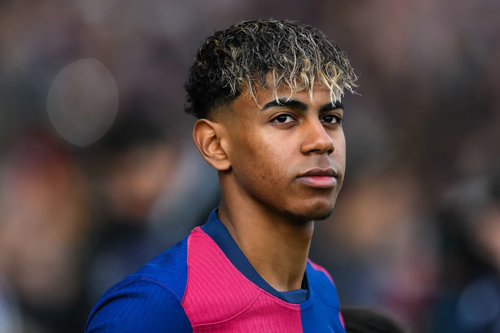

Lamine Yamal, born July the 13th 2007, is one of the best youngsters in football history. It all began in Esplugues de Llobregat, where a star was born. His idol was Neymar Jr because of his tricks and skill. At the age of 4, he joined his local club, La Torreta. Yamal stood out from everyone not because he was the youngest by a few years, but because of his exceptional talent, maturity and skill. After 2 great years, he left the club to join the one and only FC Barcelona's First Team Squad in April 2023 and became the youngest player to be nominated for the Ballon d'Or (at the age of 17). He achieved success by staying dedicated and focusing in his career.
